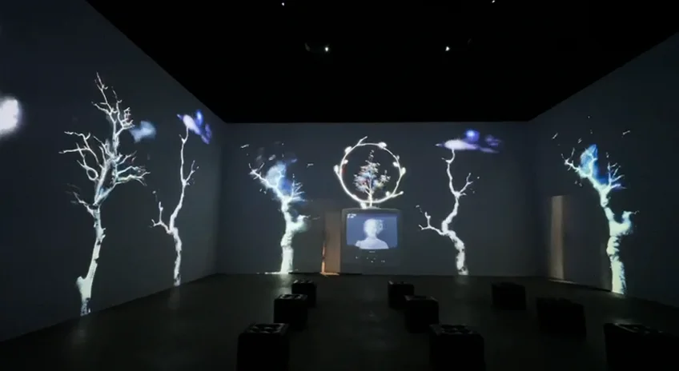
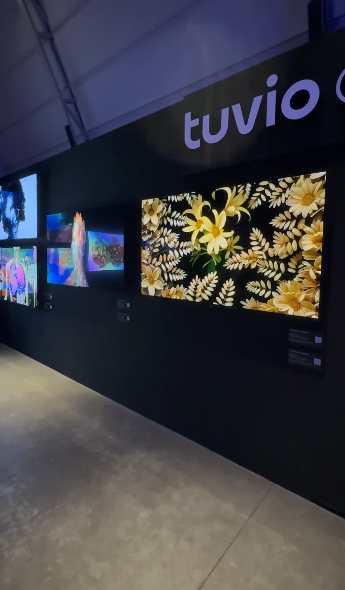

Куда идёт «новое» искусство?
Москва · ВнутриGallery, «Хлебозавод № 9» · 2025
Работа «Осознание» и работа для проекционного зала, подготовленная к вернисажу. Участие в составе арт-группы «Берёзовый промпт».
Групповая выставка арт-группы «Берёзовый промпт» в центре цифрового искусства «Внутри». Куратор — Марианна Малярова. Название обращается к статье Василия Кандинского о поиске новых форм художественного выражения.
На выставке я представил работу «Осознание». Также подготовил к вернисажу работу для проекционного зала.
«Осознание»
«Осознание» — отдельная видеоработа. Ниже — полная версия работы; материал для проекционного зала показан отдельно.
Работа для проекционного зала
Эту работу я подготовил к вернисажу выставки для показа в проекционном зале.

Документация выставки

